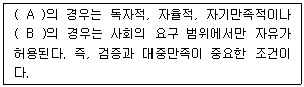
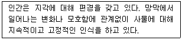

시각디자인산업기사 (2011-03-20 기출문제)
1과목: 색채학
1. 어떤 색이 다른 색의 영향으로 인하여 실제와는 다른 색으로 변해 보이는 현상은?
- 색의 대비
- 색의 동화
- 색의 유목성
- 혼색 효과
(정답률: 43%)

2. 다음 설명 중 색입체에 대한 내용으로 옳은 것은?
- 색상을 스펙트럼 순으로 둥글게 배열한 것이다.
- 색의 삼속성을 삼차원 공간에 배열한 것이다.
- 색의 삼속성을 반사율에 따라 입체적으로 배열한 것이다.
- 색상을 중심축에 놓고 채도를 둥글게 배열한 것이다.
(정답률: 80%)
3. 다음 중 컬러 슬라이드 필름에 해당되는 혼합 방법은?
- 가산혼합
- 감산혼합
- 중간혼합
- 동시가법혼색
(정답률: 알수없음)
4. 중성색 옆의 한색은 더욱 차게 느껴지고, 중성색 옆의 난색은 더욱 따뜻하게 느껴지는 대비는?
- 연변대비
- 한난대비
- 보색대비
- 면적대비
(정답률: 알수없음)
5. 다음 중 표면색(surface color)에 대한 용어의 정의는?
- 광원에서 나오는 빛의 색
- 빛의 반사 또는 투과된 색
- 빛을 확산 반사하여 불투명 물체의 겉면에 속하는 지각되는 색
- 구멍을 통하여 보이는 색과 같이 빛이 발하는 물체가 무엇일까 하는 인식을 방해하는 조건에서 지각되는 색
(정답률: 75%)
6. 명도의 높고 낮음과 가장 관련 있는 느낌은?
- 온도감
- 중량감
- 흥분, 침착감
- 시간의 장단감
(정답률: 알수없음)
7. 다음 중 무대조명과 관계 깊은 혼색은?
- 동시 가법혼색
- 병치 가법혼색
- 동시 감법혼색
- 병치 감법혼색
(정답률: 알수없음)
8. 다음 중 '메카로 효과'에 대한 것은?
- 눈에 자극되는 색채의 자극강도의 저하에 따라 지각색의 범위가 좁아지는 제3색각 이상을 말한다.
- 대뇌에서 인지한 사물의 방향에서 일어나며 보색잔상이 이동하는 경우의 효과를 말한다.
- 면적에 따라 색의 명도, 채도를 다르게 지각하는 현상을 말한다.
- 빨간색을 오래 주시하면 녹색의 어른거림이, 노란색을 오래 주시하면 파랑색의 어른거림을 말한다.
(정답률: 알수없음)
9. 분광광도계와 몇 가지의 기준 Data를 이용하여 색시편의 색좌표를 직접 계산하는 색체계는?
- Munsell 색체계
- CIE 색체계
- Ostwald 색체계
- ISCC-NIST 색명체계
(정답률: 67%)
10. 배경이 검정일 경우 명시성이 가장 높은 색은?
- 노랑
- 빨강
- 파랑
- 자주
(정답률: 90%)
11. "일반색명"이라고도 하며, 색상, 명도, 채도를 표시하는 색명은?
- 고대색명
- 고유색명
- 계통색명
- 유행색명
(정답률: 알수없음)
12. 조명 및 관측조건이 달라도 주관적으로는 물체색이 별로 변화되어 보이지 않는 색지각 현상은?
- 동화효과
- 항상성
- 잔상
- 푸르킨예 현상
(정답률: 알수없음)
13. 다음 색채조절에 관한 설명 중 적절하지 못한 것은?
- 장시간 보여지는 대상물에 대해서는 고명도 고채도는 피한다.
- 색채조절을 하기 위해서는 다양한 색을 사용 해야만 한다.
- 실내에 있어서 조명의 특성을 이용하여 효율을 높인다.
- 색채에 의한 심리적 효과를 이용하여 효과를 높인다.
(정답률: 100%)
14. 다음 대비 현상 중 가능하지 않은 관계는?
- 무채색 끼리 대비 - 명도대비
- 유채색 끼리 대비 - 색상대비
- 무채색 끼리 대비 - 색상대비
- 유채색 끼리 대비 – 채도대비
(정답률: 알수없음)
15. 배색에 앞서 고려해야 할 사항이 아닌 것은?
- 사물의 성질을 알도록 하거나 사물의 기능이나 용도에 부합되는 배색을 하도록 한다.
- 색의 효과가 어던 심리 작용을 불러일으킨다는 점을 색채 조절의 근본 사상에 포함시켜야 한다.
- 색채 공간에 주로 접하는 사용자를 고려해야 할 때가 많다.
- 색료의 광학성, 또는 조명의 기술적인 조건 등을 배려해야 할 필요는 없다.
(정답률: 알수없음)
16. 파란색 물감에 흰색 물감을 섞었을 때 나타나는 변화는?
- 명도와 채도 모두 높아진다.
- 명도와 채도 모두 낮아진다.
- 명도는 높아지나 채도는 낮아진다.
- 채도는 높아지나 명도는 낮아진다.
(정답률: 알수없음)
17. 먼셀(Munsell) 색체계에 있어서, 색입체를 수평으로 자르면 어떤 면이 나타나는가?
- 동일채도와 색상면
- 동일명도면
- 2개의 보색 색상면
- 무채색 단계면
(정답률: 알수없음)
18. 먼셀(Munsell) 색체계의 기본 명암단계는 이상적인 검정과 백색을 제외하고 몇 단계인가?
- 9단계
- 7단계
- 14단계
- 12단계
(정답률: 92%)
19. 오스트발트의 윤성조화에 대한 설명 중 틀린 것은?
- 위 사변에 평행하게 그은 등흑계열이 조화를 이룬다.
- B-W에 평행하게 그은 등순계열이 조화를 이룬다.
- 수평으로 자른 등가 색상환이 조화를 이룬다.
- 색삼각형 내의 1개의 색에 대하여 모든 27개의 조화색을 얻을 수 있다.
(정답률: 알수없음)
20. 색을 지각적으로 고른 감도의 오메가 공간을 만들어 조화시킨 색채 학자는?
- 오스트발트
- 먼셀
- 문,스펜서
- 비렌
(정답률: 알수없음)
2과목: 인쇄 및 사진기법
21. 다음 중 커플러(coupler)와 가장 밀접한 관계가 있는 것은?
- 발색제
- 현상제
- 표백제
- 정착제
(정답률: 알수없음)
22. 다층평판에서 화선부로 사용하는 친유성의 금속은?
- 구리
- 크롬
- 알루미늄
- 스테인리스
(정답률: 알수없음)
23. 카메라와 사람의 눈을 비교할 때 수정체는 카메라의 무엇과 같은 역할을 하는가?
- 셔터
- 조리개
- 렌즈
- 필름
(정답률: 78%)
24. 다음 중 정착액 속에서 경막효과가 가장 강한 약품은?
- 칼륨명반
- 수산화칼슘
- 수산화나트륨
- 탄산나트륨
(정답률: 50%)
25. 피사체의 앞쪽 45도 정도로부터의 조명으로서 적당한 입체감과 깊이가 표현되며 모든 조명의 기본적인 조명 이라고 할 수 있는 것은?
- 정면광
- 측광
- 사광
- 역광
(정답률: 알수없음)
26. 접사를 주로 하는 렌즈로 식물사진이나 곤충을 촬영할 때 많이 사용하며, 일반 렌즈보다 렌즈 경동의 헬리코이드를 길게 만들어 근접 촬영이 쉽도록 설계한 렌즈는?
- 표준렌즈
- 광각렌즈
- 쉬프트렌즈
- 매크로렌즈
(정답률: 75%)
27. 다음 중 흑백 현상액의 현상 주약이 아닌 것은?
- 브롬화 칼륨
- 메톨
- 페니돈
- 하이드로퀴논
(정답률: 62%)
28. 파일링(piling) 현상에 대한 설명으로 틀린 것은?
- 블랭킷에 지분이 점점 쌓여 발생한다.
- 블랭킷에서는 발생하지 않으며, 주로 잉크롤러의 영향이 크다.
- 물에 약한 코팅층의 종이를 사용하면 발생한다.
- 분산이 불량한 잉크를 사용하면 발생한다.
(정답률: 78%)
29. 어떠한 범위 이상의 외력에 대하여 변형하고, 그 외력을 없이면 변형된 그대로의 형태를 유지하는 성질은?
- 탄성
- 점성
- 요변성
- 소성
(정답률: 알수없음)
30. 필름과 같은 크기로 인화하여 프레임구성과 노출상태 등을 알아보기 위한 작업은?
- 확대인화
- 밀착인화
- 수평인화
- 수직인화
(정답률: 알수없음)
31. 다음 중 피사계의 심도가 깊어지는 조건이 아닌 것은?
- 렌즈의 초점거리가 짧을수록
- 촬영거리가 멀수록
- 조리개 구명을 적게 할수록
- 피사체의 크기가 작고, 망원렌즈를 사용할수록
(정답률: 57%)
32. 화상의 반전 작용을 의미하며, 현상 중인 필름에 적당한 빛을 쬐어, 한 장의 화면에 음화와 양화가 함께 나타나게 하는 효과를 무엇이라 하는가?
- 이중 인화
- 릴리프 포토
- 솔라리제이션
- 디포메이션
(정답률: 70%)
33. 실내촬영시 빛의 부족으로 활영이 어려울 때의 대처 방안 으로 가장 적절하지 않은 방법은?
- 고감도 필름을 선택한다.
- 플래시 등 인공광원을 사용한다.
- 트라이포드(tripods)를 사용한다.
- 조리개를 조인다.
(정답률: 50%)
34. 2개 이상의 빛이 서로 만나서 진폭이 극대가 되면 그 합성광을 받는 면에서는 명암의 변화가 일어나는데 이러한 현상과 가장 관계있는 것은?
- 편광
- 간섭
- 회절
- 분산
(정답률: 70%)
35. 다음 중 주광용 컬러필름에 가장 적합한 인공광원은?
- 백열등
- 텅스텐등
- 전자플래시
- 형광등
(정답률: 알수없음)
36. 일반적으로 PS판을 사용하여 오프셋 인쇄를 하였다면 무슨 인쇄방식에 속하는가?
- 볼록판
- 오목판
- 공판
- 평판
(정답률: 알수없음)
37. 속장을 철사로 꿰매고 등에 풀칠을 한 후, 표지를 씌우고 표지와 속장을 함게 다듬 재단하는 제책 방식은?
- 양장 제책
- 간이 제책
- 호부장 제책
- 무선철 제책
(정답률: 알수없음)
38. 실루엣 사진을 촬영하기 위한 가장 적당한 광선은?
- 정면광
- 측광
- 사광
- 역광
(정답률: 알수없음)
39. 다음 안료 중에서 유기안료인 것은?
- 리솔레드
- 감청
- 티탄화이트
- 카본블랙
(정답률: 67%)
40. 일반적인 오프셋 매엽 인쇄기의 주요 구성 부분이 아닌 것은?
- 잉크 장치
- 축임 장치
- 급지 장치
- 독터 장치
(정답률: 알수없음)
3과목: 시각디자인론
41. 순수형태의 기하학적 정의가 틀린 것은?
- 점 - 위치만 있고 크기가 없다.
- 선 - 크기가 있고 위치는 없다.
- 면 - 선의 이동 흔적이다.
- 입체 - 면의 이동 흔적이다.
(정답률: 70%)
42. 극도의 미학적, 축소화를 지향, 최소한의 장식과 미학으로 처리했던 사조는?
- 미니멀리즘
- 팝아트
- 포스트모더니즘
- 유토피아
(정답률: 알수없음)
43. 반복(repetition), 방사(radiation), 점이(gradation) 등이 속하는 디자인 원리는?
- 리듬
- 균형
- 조화
- 강조
(정답률: 알수없음)
44. 현대적 감각과 강한 역사인식을 결합한 디자인을 보여준 펜타그램은 어느 나라에서 시작된 디자인 회사인가?
- 영국
- 독일
- 이탈리아
- 미국
(정답률: 42%)
45. 일반적인 도형과 바탕의 성질을 분류한 설명 중 틀린 것은?
- 도형은 선이나 표면이 복잡해지면 평면으로 보인다.
- 도형은 표면이 있는 것처럼 보이나 바탕은 그렇지 않다.
- 도형은 인상성과 주목성이 강하므로 기억되기 쉬운데 비해 바탕은 그렇지 못하다.
- 도형은 앞으로 두드러지는 까닭에 가까워 보이고 바탕은 배경이 되어 멀어져 보인다.
(정답률: 알수없음)
46. 배치도에 대한 설명으로 옳은 것은?
- 구조물이나 기계의 외형을 나타내는 도면
- 공장 내부의 기계 등의 설치위치를 나타내는 도면
- 기계나 건물 등의 골조를 표시하는 도면
- 선체나 자동차의 차체 등의 복잡한 곡면을 표시하는 도면
(정답률: 알수없음)
47. 디자인 관리의 의의와 관계없는 것은?
- 계획
- 조직
- 조정 및 통제
- 세무 및 감사
(정답률: 알수없음)
48. 미국의 알렉스 오즈번이 창안한 효율적인 아이디어 발상 법으로서 자유로운 발언을 하는 과정에서 새로운 아이디어를 얻는 방법은?
- 체크리스트법
- 시네틱스
- 브레인스토밍
- 관찰법
(정답률: 80%)
49. 1점 쇄선의 설명으로 옳은 것은?
- 짧은 선을 일정한 간격으로 나열한 선
- 연속적으로 이어진 선
- 길고 짧은 2종류의 선을 번갈아 나열한 선
- 긴 선과 2개의 짧은 선을 번갈아 나열한 선
(정답률: 80%)
50. 투시도에서의 입점에서 물체와 시점간의 연결선은?
- 시점(Eye point)
- 소점(Vanishing point)
- 시선(Visual line)
- 수평축(Horizontal line)
(정답률: 알수없음)
51. 모리스(Morris)가 수공예를 고집하는데 반해 근대 기계미술을 시인하면서 미래 지향적인 자세를 보여 주었으며, "선은 힘이다" 라고 주창한 벨기에의 신예술운동의 선구자는?
- 노만 게대스(N. Geddes)
- 반 데 벨데(H. Van de Velde)
- 올 브리히(J. M. Olbrich)
- 존 러스킨(John Ruskin)
(정답률: 알수없음)
52. 바우하우스에 대한 설명으로 옳지 않은 것은?
- 바우하수스의 교육은 기초, 공방, 건축교육 등의 순서로 실시되었다.
- 바우하우스의 조형이념이 미국으로 전이되어 미국에 큰 영향을 미쳤다.
- 바우하우스의 교수인 모홀리나기는 자연의 법칙을 학생들에게 체험케 했다.
- 제2기의 바우하우스교육은 하네스 마이어에 의해 베를린을 중심으로 시작되었다.
(정답률: 알수없음)
53. 다음 용어에 대한 설명 중 틀린 것은?
- 픽토그라피 - 단순화된 그림에 의하여 대상의 성질이나 혹은 그 사용법을 표시하는 것
- DM - 실제적이고 구체적인 목적을 가지고 우편물의 형식을 빌어 직접 소구대상에 어필하는 것
- POP 디자인 - 상품을 선전하고 판매하기 위해 판매 현장에서 직접적인 구매충동을 유도하는 것
- 슈퍼그래픽 - 물체로 부터 날아오는 빛의 파동을 레이저 장치를 이용하여 기록하였다가 나중에 그대로 재생하는 것
(정답률: 75%)
54. 바우하우스(Bauhaus)의 설립자는?
- 존 러스킨(John Ruskin)
- 윌리암 모리스(William Morris)
- 헨리 반 데 벨데(Henry van de Velde)
- 윌터 그로피우스(Walter Gropius)
(정답률: 62%)
55. 1880년대부터 수많은 디자이너들이 산업혁명에 따른 기계문명의 출현을 앞두고 그것이 인간의 생존에 해로운 것이라고 단정하고 맹렬하게 저항한 운동은?
- 아트 앤드 크라프트
- 아르누보
- 독일공작연맹
- 바우하우스
(정답률: 알수없음)
56. 다음 ( ) 안에 알맞은 것은?

- A : 편집 디자인, B : 광고 디자인
- A : 회화, B : 조소
- A : 시각디자인, B : 제품디자인
- A : 순수예술, B : 디자인
(정답률: 알수없음)
57. 유겐트스틸(Jugend stil)과 가장 관련이 깊은 것은?
- 독일의 아르누보 운동
- 영국의 미술공예 운동
- 벨기에의 신미술 운동
- 이태리의 신예술 운동
(정답률: 46%)
58. 다음 중 디자인의 기본요소는?
- 변화, 통일
- 대칭, 균형, 리듬
- 점, 선, 면
- 색채, 형태, 조화
(정답률: 알수없음)
59. 어떤 색을 잠시 보고 회색 종이를 보면 그 보색에 가까운 색이 보이는 현상은?
- 다의도형의 의한 착시
- 모순도형의 착시
- 일시적 착시
- 달의 착시
(정답률: 74%)
60. 광고에서 브랜드의 목적과 일치하며, 반복해서 사용하는 간결하면서도 힘이 있는 말이나 문장으로, 브랜드의 이미지와 디자인을 극대화하기 위해 가장 소비자의 호기심을 유발시키는 역할을 하는 것은?
- 슬로건(slogan)
- 모티브(motive)
- 트레이드마크(trademark)
- 스토리텔링(storytelling)
(정답률: 알수없음)
4과목: 시각디자인실무 이론
61. 편집디자인에서 마진(margin)이란?
- 경제적인 디자인으로 생겨지는 이익의 폭
- 항목과 항목 사이에 들어가는 간지의 여백
- 문자나 그림이 들어간 부분 이외의 여백
- 맨 뒷면 표지에 들어가는 광고 지면
(정답률: 67%)
62. 교통광고 디자인에 관한 설명으로 거리가 먼 것은?
- 교통광고란 대중의 교통수단의 내,외부는 물론 역이나 역 시설물 등을 매체로 하는 광고이다.
- 교통광고는 TV, 신문, 라디오, 잡지에 이어 제5의 매체라고도 불리 운다.
- 광고의 노출 빈도가 소구 대상의 선택 의사와 불가분의 관계를 갖는다.
- 무조건적으로 수고 대상에게 노출될 수 있어 다른 매체가 갖지 못하는 광고의 특성을 가지고 있다.
(정답률: 알수없음)
63. 개념적인 어떤 것을 비합리적, 비논리적인 복합적 차원의 형태로 시각화하여 표현한 일러스트레이션은?
- 기하학적 일러스트레인션
- 유기적 일러스트레이션
- 구상적 일러스트레이션
- 초현실적 일러스트레이션
(정답률: 알수없음)
64. 다음에서 설명하는 형과 형태의 지각에 관한 용어는?

- 동일성
- 착시성
- 공간성
- 항상성
(정답률: 알수없음)
65. 캘린더의 조형적 요소에 관한 설명 중 옳은 것은?
- 캘린더의 규격은 용지의 크기에 따라 변화되는데, 현재 사용되고 있는 용지의 크기는 국전지, 국반절지 두 종류이다.
- 캘린더를 구성하는 조형적 요소에는 크기, 일러스트레이션, 색, 타이포그래피의 4가지 요소가 있다.
- 일러스트레이션은 캘린더 디자인에서 가장 중요하다고 볼 수 있는 요소로서 장식적 기능과 홍보 매체로서의 기능을 모두 소화할 수 있어야 한다.
- 조형적 요소로서 타이포그래피 기능은 일러스트레이션과 조화를 이루되 가독성은 고려치 않아도 무리는 없다.
(정답률: 60%)
66. 신문광고의 구성 요소는 크게 조형적 요소와 내용적 요소로 구분된다. 다음 중 내용적 요소에 해당하는 것은?
- 캡션(caption)
- 보더라인(border line)
- 로고타입(logo type)
- 일러스트레이션(illustration)
(정답률: 알수없음)
67. 다음 중 소비자 조사법의 종류가 아닌 것은?
- 실험법
- 사례연구법
- 심층면담법
- 미래척도법
(정답률: 알수없음)
68. 같은 크기로 된 한 벌의 완전한 문자체로 숫자, 부호, 악센트 등이 포함된 문자의 무리를 무엇이라고 하는가?
- 그리드
- 레터링
- 블리드
- 폰트
(정답률: 알수없음)
69. 다음은 제품의 라이프 사이클에서 ( )안에 내용은?
- 정체기
- 평가기
- 광고기
- 성숙기
(정답률: 알수없음)
70. 소비자의 라이프스타일에 관한 설명으로 틀린 것은?
- 욕구목표를 만족시켜줄 수 있는 속성을 가진 상품보다 집단의 이익을 위한 상품을 선택한다.
- 생활양식에 있어서 환경적인 영향, 즉 사회계층, 생활주기 및 가족을 강조한다.
- 자기의 생활양식을 기초로 생활목표를 세우고 이에 따라 여러 가지 욕구를 갖게 된다.
- 개성과 자아개념 등과 같은 내적동기의 조사가 최근의 경향이다.
(정답률: 알수없음)
71. C.I의 기본편에 해당하는 것을 옳게 나열한 것은?
- 심벌마크, 로고타입, 전용색상, 캐릭터, 시그니처 유니폼, 표지 및 간판
- 심벌마크, 로고타입, 전용색상, 전용서체, 캐릭터 마스코트, 시그니처
- 심벌마크, 로고타입, 전용색상, 전용서체, 캐릭터 시그니처, 간판, 서류식
- 심벌마크, 로고타입, 전용색상, 캐릭터, 마스코트 유니폼, 간판, 서류식
(정답률: 80%)
72. 브랜드를 구성하는 모든 요소들을 일관성 있고 주체성 있게 호의적인 이미지를 형성하는 전략은?
- 광고(Advertising)
- 네이밍(Naming)
- 프로모션(Promotion)
- B.I(Brand Identity)
(정답률: 알수없음)
73. 자동차에 대한 소비자의 선호도를 스포티한 것과 사치스러운 것 두개의 속성을 가지고 공간 속 위치를 설정 조사할 때의 시장 포지셔닝 작성 방법은?
- 의미론적 차별화법
- 다차원적 척도법
- 체크리스트법
- 매트릭스법
(정답률: 알수없음)
74. 다음 중 옥외광고매체는?
- 신문
- 잡지
- 비행선
- 패키지
(정답률: 90%)
75. 기업의 제품과 마케팅믹스를 소비자의 마음속에 자리잡게 기획하는 광고 용어는?
- 타겟설정
- 포지셔닝전략
- 디자인 모티브 설정
- 매체 전략
(정답률: 알수없음)
76. 포장의 기능을 설명한 것 중 틀린 것은?
- 보호와 보존의 기능을 가져야 한다.
- 구매자에게 소구력을 줄 수 있는 전달의 기능을 가져야 한다.
- 운반하기 간편해야 하고 단기간 동안 사용할 수 있도록 해야 한다.
- 소비자가 상품을 구입하도록 구매의욕을 갖게 해야 한다.
(정답률: 80%)
77. 메슬로우(A.Maslow)의 인간욕구 단계 중 첫 번째로 요구되는 욕구는?
- 생리적 욕구
- 안전에 대한 욕구
- 사회적 욕구
- 자아실현의 욕구
(정답률: 알수없음)
78. 측정 가능한 광고 목표로서 DAGMAR 모형을 주장한 사람은?
- 스탠스 필드
- 레이
- 콜리
- 아아크
(정답률: 40%)
79. 워드 마크(word mark)의 설명 중 틀린 것은?
- 문자로써 간단히 회사명을 나타내는 것이다.
- 회사명으로 디자인 하거나 긴 회사명을 축약할 때 사용한다.
- 배우고 유지하기 어려우나 제2의 새로운 개념의 상징으로 사용 가능하다.
- 회사명 전체를 한꺼번에 읽을 수 있고 이니셜을 사용할 수 있다.
(정답률: 알수없음)
80. 타이포그래픽에서 본문용 타입의 특성이 아닌 것은?
- 가독성
- 주목성
- 심미성
- 적정성
(정답률: 37%)